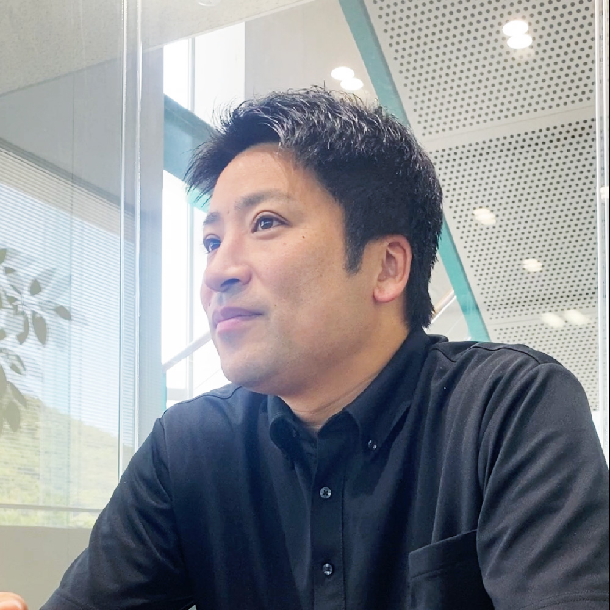

人を育てる、人を支える。
宇部営業所
2007年入社（新卒）
所長
T.Hさん

インタビュー
仕事内容
宇部営業所の
管理運営を行っている
宇部営業所の所長として、営業所の管理運営を行っている。基本的には営業活動を行いながら、営業所全体の管理も担当している。営業所内の営業社員の仕事の進捗や数字の管理、今後の目標設定、イベントの運営管理などが主な業務である。
入社の経緯や決め手
「山口で働きたい」
が入社の決め手
出身が山口県で、山口県で働きたいという思いから三和を選んだ。当時は建材業界に特別な興味があったわけではなく、「商社」という言葉に魅力を感じて入社を決めた。
実際のところ、山口県内の企業は三和しか受けていなかった。山口で働きたいという気持ちが強く、その思いが入社の決め手だった。
入社前に感じた印象と入社後のギャップ
想像とは違った、
その先に成長があった
入社前は商社マンとして働くイメージを持っていた。
しかし、入社後の半年間は倉庫で商品を運ぶ仕事が中心だった。営業職として働くつもりで入社したため、毎日泥だらけになって帰宅することに大きなギャップを感じた。会社の建物やイメージと、実際に行っている仕事との違いも大きかった。
当時はミッション車のトラックに乗りながら営業活動を行う時代でもあり、想像していた商社マンとはかなり違っていた。正直なところ、辞めたいと思ったこともあったが、親が厳しかったこともあり続けることになった。
現在は当時とは大きく変わり、倉庫で荷物を運ぶ業務はほとんどなく、配送研修を1日経験する程度になっている。
仕事のおもしろさややりがい
仲間の成長が、
私のやりがい
現在は管理職という立場になり、自分が指導した社員が成長していく姿を見ることに大きなやりがいを感じている。営業所の社員が成果を上げたり、数字を伸ばしたりする姿を見ると、自分がこれまでやってきて良かったと思える。
一方で、管理職として全員を同じ方向に向かせ、目標達成に向けてまとめていくことは難しさも感じている。また、管理職になってからは社長の考えや言葉を直接聞く機会も増えた。会社の方向性や考え方を直接学べることは非常に勉強になっている。
長く働き続けることができた理由を振り返ると、営業という仕事そのものが単純に楽しかったことが大きいと思う。
働き方について
人を育て、
会社も成長する
現在は、2026年入社の新入社員が2027年1月にしっかり独り立ちできるよう、新たなOJT制度の構築を中心となって進めている。
これまでは本社研修後、それぞれの営業所に配属された新入社員を各営業所に任せる形となっており、教える順番や内容、理解度にもばらつきがあった。
しかし、社会人1年目で基礎をしっかり身につけておかないと、その後何年も苦労することになる。そのため、しっかり教育し、辞めにくい環境をつくりながら、社員を成長させ、より長く続く企業にしていきたいと考えている。
また、この取り組みは新人教育だけでなく、教える側の成長も目的としている。中堅社員の指導力も高めながら、会社全体で成長できる仕組みにしていきたい。
これまでは「昔からこうだから」という理由で続いていた非効率な部分もあったが、今後はそうした部分を見直しながら、より良い仕組みにブラッシュアップしていきたいと考えている。
社風について
自然と距離が縮まる、
温かな社風
三和は社員同士の距離が近く、フレンドリーな人が多い会社だと感じている。休日に一緒に遊びに行く社員もいるほどで、自然とそうした関係性が生まれている。
また、上司との距離も近い。OJTなどでも上司と話す機会が多く、相談しやすい環境が整っていると感じている。
学生時代の経験で現在活かされていること
経験よりも、
人としての姿勢が大切
自身の学部と建材業界には全く関係がなかった。
そもそも建材業界は学生時代に触れる機会が少ない業界であり、多くの人がゼロからスタートする。そのため、どの学部出身か、どんな部活動をしていたかはあまり関係ないと考えている。
実際には入社後に現場へ行き、仕事を通じて身につけていくことがほとんどである。
営業の話し方やコミュニケーション能力についても、ある程度はセンスの部分があると思う。それ以上に大切なのは、しっかり挨拶ができることや、素直に謝れること、問題が起きた際に原因を見つけて切り替えられることだと感じている。
また、お客様は違っていても同じような悩みを抱えていることが多い。そのため、一人で抱え込むのではなく、社員同士で助け合うことが大切だと思う。
就活生へのアドバイス
自分が
納得できる選択を
特別なアドバイスはない。
自身の場合は受けた企業がすべて内定をいただいたが、その中でも山口県で働きたいという思いが強かったため、山口県内で受けていた三和への入社を決めた。
今後のビジョンやキャリアプラン
人を育て、
組織を強くする
大きな目標としては、良い部下を育てることである。
自分と一緒に会社を引っ張ってくれる社員を育てたいと考えている。会社を引っ張りたいと思う人がたくさんいても、同じ考えや目標を持っていなければ意味がない。そのため、みんなで同じ方向を向いて頑張れる組織をつくっていきたい。
また、身近な目標としては、自分の営業所をより働きやすい環境にすることである。営業所で働く全員にとって、心地よい職場をつくっていきたいと考えている。
休日の過ごし方
家族との時間、
ひとりの時間
休日は子どもと遊んだり、趣味のゴルフを楽しんだりして過ごしている。
山口県の魅力
自然に囲まれた、
心地よい暮らし
もともと都会よりも田舎の方が好きなため、山口県はとても過ごしやすいと感じている。
就活生へのメッセージ
人の暮らしを支える、
やりがいある仕事
山口県で働きたいと考えている人には、とても良い環境だと思う。
また、建築に深く関わることができるため、家づくりに関する知識を幅広く学ぶことができる。衣・食・住の「住」という、人の暮らしに欠かせない部分に携われることも大きな魅力である。
タイムスケジュール
営業マンの1日
タイムスケジュールを見る
| 08:00 | 出社＆朝礼 |
|---|---|
| 10:00 | 現場確認 |
| 11:00 | 配送段取り |
| 12:00 | 昼食 |
| 13:00 | 資材の訪問提案 |
| 15:00 | 見積作成 |
| 17:00 | 退社 |
経営管理課 課長の普通の1日
タイムスケジュールを見る
| 08:00 | 出社＆メールチェック |
|---|---|
| 10:00 | 伝票＆各書類チェック |
| 12:00 | 昼食 |
| 13:00 | 来客対応 |
| 15:00 | 各種打ち合わせ |
| 17:00 | 退社 |
経営管理課 課長のアクティブな1日
タイムスケジュールを見る
| 08:00 | 出社＆メールチェック |
|---|---|
| 10:00 | 銀行訪問 |
| 11:00 | 顧問会計事務所で打ち合わせ |
| 12:00 | 昼食 |
| 13:00 | リクルート対応 |
| 15:00 | 社内打ち合わせ |
| 17:00 | 退社 |